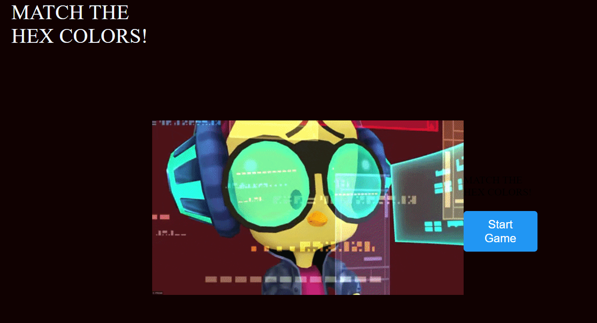

Computer Languages
Objective:
Demonstrate software development skills using more than one programming language and development environment.

Lanuage: C#
Project: Creating a web browser
This project is an exciting endeavor in C# programming, where I have crafted a unique web browser enriched with a captivating theme. The browser not only facilitates web exploration but also integrates a notepad and displays real-time date and time for user convenience. Its user-friendly interface features a visually appealing background, a seamless search bar, and an enchanting picture galaxy, enhancing the overall browsing experience.
Language: Python:
Project: Application
GITHUB REPOSITORY
This a Python-based application for client information management. By using Streamlit an open-source Python library that simplifies the process of creating interactive web applications.This versatile application is accessible from any platform, making it easy for our associates to efficiently track client data."
Click image below to go the application.
Language: HTML & CSS:
Project: WEBSITE
GITHUB REPOSITORY
The online match game for desktop computers was built using HTML to structure the game's layout and elements. CSS was employed for styling, ensuring the game looked visually appealing on various screen sizes. JavaScript provided the game's functionality, managing logic, card interactions, and screen transitions, delivering an engaging desktop gaming experience.
Click image below to go the application.
